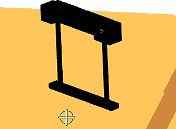
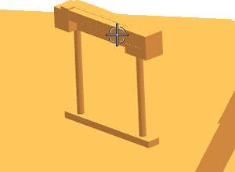
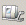

Add the tool rack to the machine assembly
When you define pockets for your tool rack using junctions, those junctions do not move with the tool rack if it is moved to a different location on the machine. In this activity, you will constrain the tool rack to the table to ensure that it cannot be moved. You will also use the NX Machine Tool Builder to add the tool rack to the CMM machine assembly.
-
Click the Assembly Navigator tab
 .
.
-
In the Assembly Navigator, right click ACR1_308_mm and choose Assembly Constraints.
-
In the Assembly Constraints dialog box, from the Type list, select Bond.
-
In the graphics window, click the CMM table.

-
Click the rack.

-
In the Assembly Constraints dialog box, click Create Constraint, and then click OK.
The rack is now constrained to the table and can only be moved with it.
-
Click the Machine Tool Navigator tab .
-
In the Machine Tool Navigator, right-click MACHINE_BASE and choose Insert→Machine Component.
-
In the Create Machine Component dialog box, in the Name box, type TOOL_RACK.
-
In the graphics window, select the tool rack.
-
In the Junctions section, clear the Name box.
-
In the Classify Component section, select the _DEVICE check box.
-
In the Device Details section, in the Device ID box, type TR1, and click OK.
-
In the Machine Tool Navigator, expand the MACHINE_BASE node.
TOOL_RACK is the last node beneath MACHINE_BASE.
-
Choose File→Save.
The tool rack is now constrained and is part of the CMM machine. You are ready to begin defining tool rack pockets.